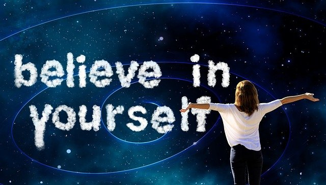
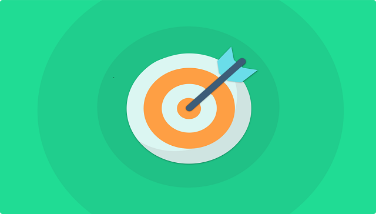
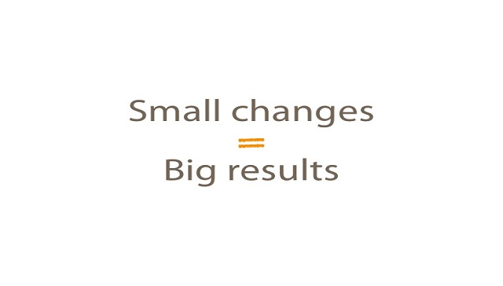
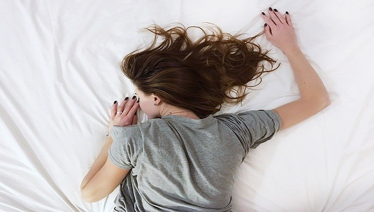
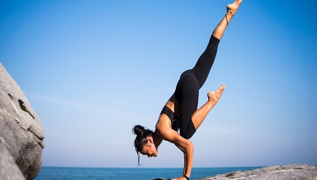

Motivation Advice
6 ways to get motivated to live a healthy life style
Be positive About yourself

If you have gone a while without exercising or eating healthily, this is okay and you should not feel bad about yourself or guilty. Regardless of your current lifestyle, you can create new habits and make positive changes for your wellbeing. Having positive self belief is so important. Believe in your own ability to change your health habits, or any other aspects of your lifestyle you want to.
Set Goals

Setting yourself realistic goals is a great way to keep yourself motivated to stay healthy. If, for example, you would like to begin or go back to exercising, setting yourself a goal of what you would like to achieve within a certain time frame can help to keep you on track. A goal could be something like being active a certain number of times in a week, joining a recreational team sport or workout class, or mastering a particular yoga stretch. There are great apps that can help you to set fitness goals and stick to them as well, such as the Couch to 5K app. You could also sign up to a charity walk or Parkrun, or for a mini marathon.
Make Small Changes

It may seem hard to stick to a healthy diet if you have to completely change your current diet and eating patterns. Instead, if you want to make healthier choices, start small and choose one change to what you eat daily, so it is more manageable. For example, if you think you are eating too much processed foods or meat, choose to change one of your meals a day to something that is more plant based.
Exercise with someone else
Exercising with another person can be a good way to stay motivated, as you can push each other to still exercise on days you may not feel like you want to. When you exercise with someone else you can also challenge one another to push yourselves that little bit further each time. Going to exercise classes can also be a great way to stay motivated as you can feel part of a community
while working out and having fun.
Get enough sleep

Getting at least 8 hours of sleep a night can help keep you motivated throughout the day as you will have more energy to do what is important to you. By combining sleep, with a balanced diet and exercise your body will have more energy. Increased energy levels can help keep you motivated to both lead a healthy lifestyle, and in other aspects of your life. It is worth the time to prioritise yourself. Leading a healthy lifestyle can help improve your mood, concentration,
mental health and overall wellbeing.
Exercise to your needs

It can be hard to stay motivated to exercise if you feel you have no time or you don’t enjoy it. There are plenty of ways that you can fit exercise into your daily routine without having to sacrifice doing something you enjoy. Making small changes such as walking or cycling part of your commute, exercising on your lunch break or while boiling the kettle can help you to fit exercise in even when you don’t think you have the time. Read our article on How to exercise when you don’t have the time to learn about more ways of making time for exercise. Again, you don’t have to make big changes; little habits over
time can make all the difference.